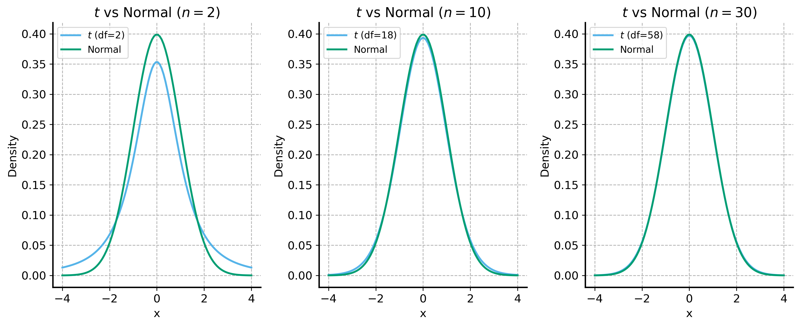

There is one more frequently applicable sampling-based method that is super helpful in statistical inference: permutation (or randomization) tests.
Permutation tests, like the bootstrap, are non-parametric – meaning they do not rely on assumptions about the underlying distribution of the data. Like the bootstrap, permutation tests rely on resampling – only instead of resampling with replacement, we resample without replacement.
Say we have two samples, \(X\) and \(Y\), and we want to test if they have different underlying distributions (e.g. different means). Then, our null hypothesis (\(H_0\)) is that the two samples are drawn from the same distribution.
So, we can combine the two samples into one larger sample, \(Z = X \cup Y\), and then randomly split \(Z\) into two new samples, \(X'\) and \(Y'\), of the same size as the original samples. We can then compute the test statistic (e.g. the difference in means) for the new samples and repeat this process many times to build a distribution of test statistics under the null hypothesis.
The only assumption we need to make is that the two samples are exchangeable under the null hypothesis. This means that, if the null hypothesis is true, the two samples could be shuffled without changing the underlying distribution.
np.random.permutation is a useful function for this. It randomly permutes the elements of an array, which we can use to create our new samples. Let’s define a function to perform a permutation test for
Code
def permutation_test(test_func, x, y, num_permutations=10000, rng=None, one_sided=True):# Compute the observed test statistic observed_stat = test_func(x, y)# Combine the two samples combined = np.concatenate([x, y]) count =0if rng isNone: rng = np.random.default_rng()for _ inrange(num_permutations):# Permute the combined array permuted = rng.permutation(combined)# Split the permuted array into two new samples x_perm = permuted[:len(x)] y_perm = permuted[len(x):]# Compute the test statistic for the permuted samples permuted_stat = test_func(x_perm, y_perm)# Compare the permuted statistic to the observed statisticif one_sided:if permuted_stat >= observed_stat: count +=1else:if np.abs(permuted_stat) >= np.abs(observed_stat): count +=1# Compute the p-value p_value = count / num_permutationsreturn p_value
We can apply this to our NBA data to test if SGA and Giannis have different scoring rates. This is quite similar to the bootstrap hypothesis test we did in the previous lecture, but instead of resampling with replacement, we will resample without replacement.
Both versions work, but the permutation test tends to be more powerful.
Statistical Power
Power
The probability of correctly rejecting the null hypothesis when it is false.
A more “powerful” test is more likely to detect a true effect. The power of a test is often written as \(1 - \beta\), where \(\beta\) is the probability of a Type II error (failing to reject the null hypothesis when it is false).
We usually want our tests to have high power, so we can detect true effects when they exist. We try to balance this against the risk of falsely rejecting the null hypothesis (Type I error) when it is actually true.
Code
### Data import and preparation ###sga_df = pd.read_csv("../data/sga-stats-24-25.csv")giannis_df = pd.read_csv("../data/giannis-stats-24-25.csv")# combine the dataframes and clean up the datasga_df["player"] ="Shai Gilgeous-Alexander"giannis_df["player"] ="Giannis Antetokounmpo"compare_df = pd.concat([sga_df, giannis_df], ignore_index=True)# filter out rows where the player did not play or was inactivecompare_df = compare_df.replace( {"Did Not Dress": np.nan, "Inactive": np.nan, "Did Not Play": np.nan, "": np.nan})compare_df.dropna(subset=["PTS"], inplace=True)# convert PTS to float/numeric and Date to datetimecompare_df["PTS"] = compare_df["PTS"].astype(float)compare_df["Date"] = pd.to_datetime(compare_df["Date"])rng = np.random.default_rng(42) # run the permutation testp_value = permutation_test(lambda x, y: np.mean(x) - np.mean(y), # lambda functions can be used inline without naming the function compare_df[compare_df["player"] =="Shai Gilgeous-Alexander"]["PTS"], compare_df[compare_df["player"] =="Giannis Antetokounmpo"]["PTS"], rng=rng)print(f"P-value for the hypothesis that SGA scores more points than Giannis: {p_value:.4f}")
P-value for the hypothesis that SGA scores more points than Giannis: 0.0336
There is really only one test!
The more statistics you learn and the more you are exposed to work in quantitative fields, the more you will see a wide variety of complicated statistical techniques and methods.
Ultimately they all represent the same process: 1. Compute a test statistic on the observed data. 2. Choose a null hypothesis / model. Either specify the null distribution explicitly or use a simulation-based method to generate a distribution of test statistics under the null hypothesis. 3. Compute a p-value by comparing the observed test statistic to the distribution of test statistics under the null hypothesis.
Most of the literature in classical statistics focuses on mathematically deriving analytical solutions for 2 and 3. All of the fancy named statistical tests you see are variations with different test statistics and null hypotheses.
Check out this blog post by Allen Downey for more on this idea and explanation of the advantages of simulation-based methods for hypothesis testing.
Example: Two-sample t-test
One of the most common statistical tests is the independent two-sample \(t\)-test, which tests if two independent samples have different means. This is used in many fields, including psychology, medicine, and social sciences – basically anywhere you want to compare two groups.
Remembering the \(t\)-test is not an important point of this course – we introduce it here because it is used so frequently in practice that it is worth understanding the basic idea behind it (and that it is just a special case of the general hypothesis testing framework we have been discussing).
We learned already that (by the Central Limit Theorem) as the sample size increases, the sampling distribution of the sample mean becomes approximately normal, even if the underlying distribution is not normal. The exact distribution of the sample mean, however, is called the t-distribution. It is quite like the normal distribution, but has heavier tails (more likely to produce extreme values). See the plots below for an illustration of how the t-distribution converges to the standard normal distribution as the sample size increases.
Code
x = np.linspace(-4, 4, 100)stats.t.pdf( x, df=10, loc=0, scale=1)fig, ax = plt.subplots(1, 3, figsize=(12, 5))# Plotting the t-distribution and normal distribution for comparisonfor i, sample_size inenumerate([2, 10, 30]): df =2* sample_size -2 sns.lineplot( x=x, y=stats.t.pdf(x, df=df, loc=0, scale=1), label=f"$t$ (df={df})", ax=ax[i] ) sns.lineplot( x=x, y=stats.norm.pdf(x, loc=0, scale=1), label="Normal", ax=ax[i] ) ax[i].grid(True) ax[i].set_title(f"$t$ vs Normal ($n={sample_size}$)") ax[i].set_xlabel("x") ax[i].set_ylabel("Density") sns.move_legend(ax[i], loc="upper left")plt.tight_layout()plt.show()

Let’s create two independent samples from uniform distributions with different means and equal variance. We’ll perform a two-sample t-test to see if they are significantly different. In other words, we will test the null hypothesis that the two samples have the same mean against the alternative hypothesis that they have different means.
We’ll use the built-in scipy.stats.ttest_ind function to perform the t-test, but we will also manually compute the t-statistic and p-value to illustrate the process. We will also sample from the t-distribution to compare our results. Finally, we will perform a permutation test to see how it compares.
Code
# simulate a t-distributionrng = np.random.default_rng(43) # set a random seed for reproducibility# take two samples from different uniform distributionssamples_a = rng.uniform(low=-1, high=3, size=10)samples_b = rng.uniform(low=-3, high=1, size=10)t_parametric = stats.ttest_ind( samples_a, samples_b, equal_var=True)print(f"Parametric t-test statistic: {t_parametric.statistic:.4f}, p-value: {t_parametric.pvalue:.6f}")# calculate the t-statistic manuallydiff_means = np.mean(samples_a) - np.mean(samples_b)# assume they have the same variance -- use the "pooled" or averaged variancepooled_var = (np.var(samples_a, ddof=1) + np.var(samples_b, ddof=1))pooled_std_error = np.sqrt(pooled_var /len(samples_a))t_stat= diff_means / pooled_std_errort_abs = np.abs(t_stat)print(f"Manual t-statistic: {t_stat:.4f}")# two-tailed test: 1 - (CDF(t_statistic) - CDF(-t_statistic))p_value_t_pdf =1- (stats.t.cdf( t_abs, df=len(samples_a) +len(samples_b) -2) - stats.t.cdf(-t_abs, df=len(samples_a) +len(samples_b) -2))print(f"Theoretical p-value from PDF of t: {p_value_t_pdf:.6f}")# Sample from a t-distributionnum_samples =10000t_samples = rng.standard_t( df=len(samples_a) +len(samples_b) -2, size=num_samples)# calculate the p-value from the simulated t-distributionp_value_simulated = np.mean(np.abs(t_samples) >= t_abs)print(f"Simulated p-value by sampling from t: {p_value_simulated:.6f}")## # Permutation test for t-statisticdef permutation_test_t( x, y, num_permutations=10000, rng=None,):# Compute the observed t-statistic observed_stat = stats.ttest_ind(x, y, equal_var=True).statistic# Combine the two samples combined = np.concatenate([x, y])if rng isNone: rng = np.random.default_rng() permuted_stats = []for _ inrange(num_permutations):# Permute the combined array permuted = rng.permutation(combined)# Split the permuted array into two new samples x_perm = permuted[:len(x)] y_perm = permuted[len(x):]# Compute the t-statistic for the permuted samples permuted_stat = stats.ttest_ind(x_perm, y_perm, equal_var=True).statistic# Compare the permuted statistic to the observed statistic permuted_stats.append(permuted_stat)# Compute the p-value permuted_stats = np.array(permuted_stats) p_value = np.mean(np.abs(permuted_stats) >= np.abs(observed_stat))return permuted_stats, p_value# Run the permutation testpermuted_stats, p_value = permutation_test_t( samples_a, samples_b, num_permutations=10000, rng = rng)print(f"Permutation test p-value: {p_value:.6f}")
Parametric t-test statistic: 2.6958, p-value: 0.014783
Manual t-statistic: 2.6958
Theoretical p-value from PDF of t: 0.014783
Simulated p-value by sampling from t: 0.014400
Permutation test p-value: 0.015700
All of these results are quite similar! It’s not a coincidence – they are all effectively the same test. We’re comparing the observed t-statistic to the distribution of t-statistics under the null hypothesis that the two samples are drawn from the same distribution.